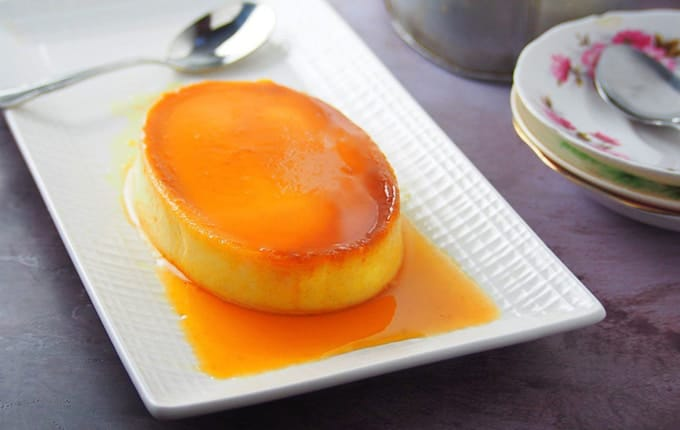

|
My Favorite Dessert: Leche Flan |
|  |
|
Leche Flan is a dessert made-up of eggs and milk with a soft caramel on top. It resembles crème caramel and caramel
custard. This delicious dessert is known throughout the world.It has been a regular item in the menu of most restaurants
because of its taste, ease in preparation and long shelf life. Leche Flan is the top dessert in the Philippines. It can also be added as a component to build other great tasting dessert creations. The dining table won’t be complete without it especially during celebrations such as parties and town fiestas. Leche flan can be cooked in one large shallow bowl and cut into squares or wedges to serve. Alternatively, it can be cooked in smaller single-serve ramekins. Leche flan is perfect by itself, but it can be served in many other ways. It is a popular topping for iced desserts in the Philippines like maiz con hielo and halo-halo. |
| Ingredients: |
|
| Preparation: |
|
Original Recipe by Panlasang Pinoy |